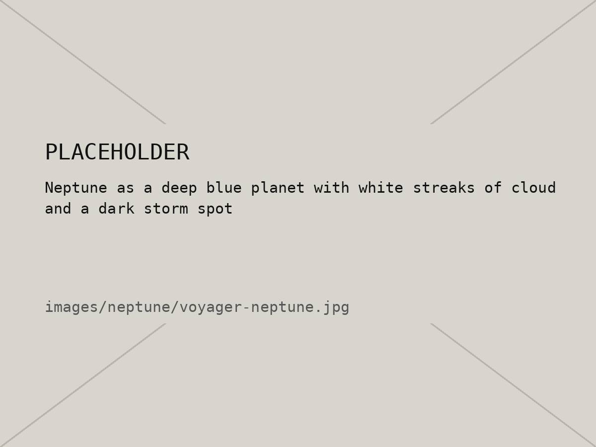
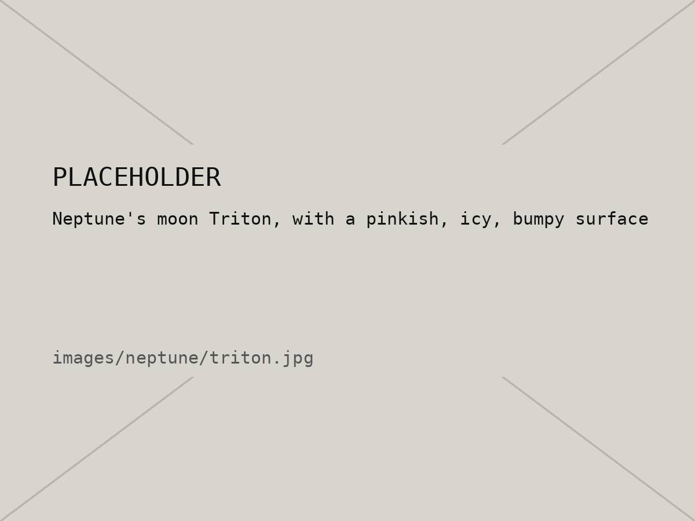

10 / 10 — Planet 8 · Bonus
Neptune
Bonus page. The farthest planet, and the windiest.
01 — Intro
Neptune is the farthest planet from the Sun, about 30 times farther out than Earth. It's an ice giant like Uranus, but a deeper blue and way more active. It has the fastest winds in the solar system, even though it barely gets any sunlight.
It's also the only planet that was found with math before anyone actually saw it. Astronomers noticed Uranus wasn't moving quite how it should, figured something big must be pulling on it, and in 1846 they pointed a telescope where the math said to look. There it was.
02 — Quick facts
| Distance from the Sun | About 4.5 billion km (30 AU) |
|---|---|
| Diameter | 49,244 km (about 4× Earth) |
| Length of a day | About 16 hours |
| Length of a year | About 165 Earth years |
| Top wind speed | About 2,000 km/h |
| Moons | 16 known (the biggest is Triton) |
| Discovered | 1846 |
03 — Images


04 — Wind speed
Neptune's winds hit about 2,000 km/h. Pick something to compare them to.